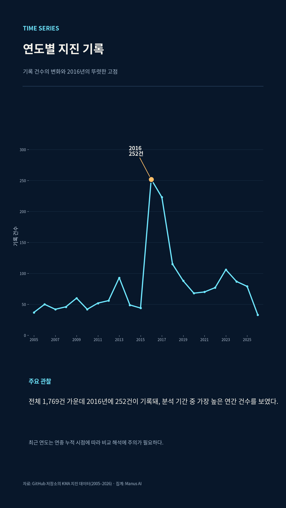
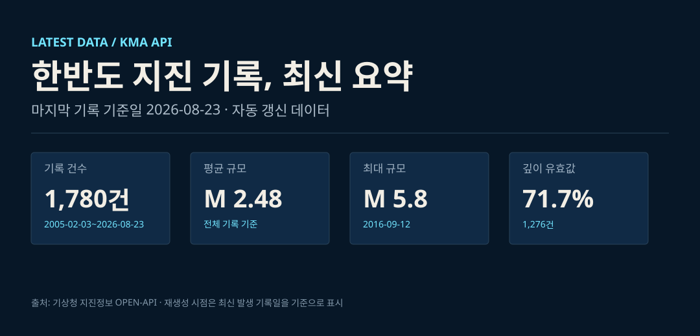
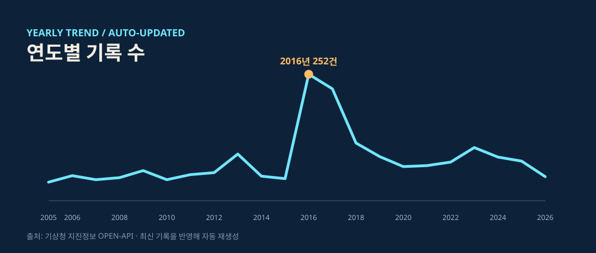
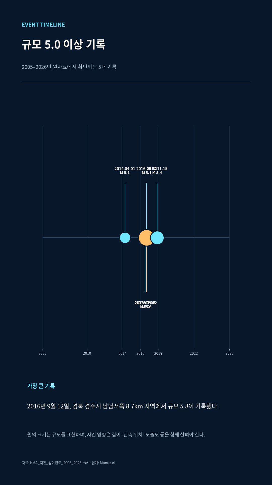
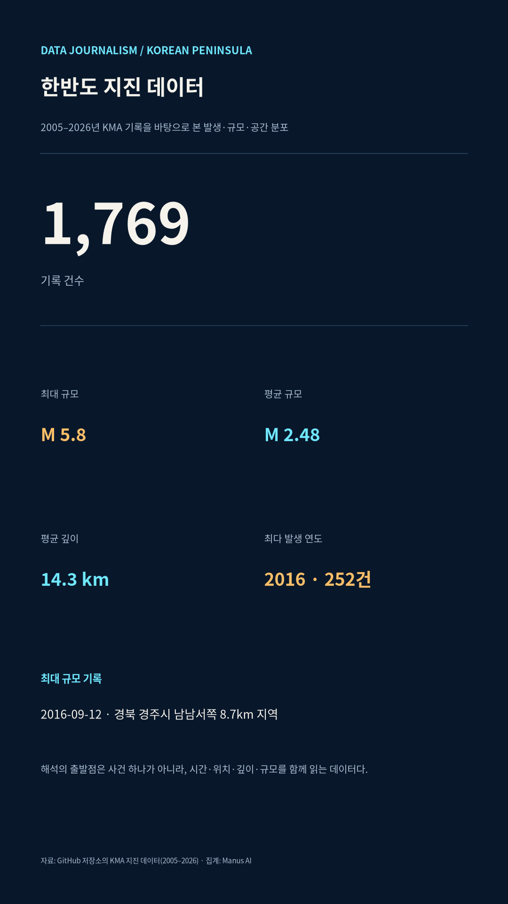
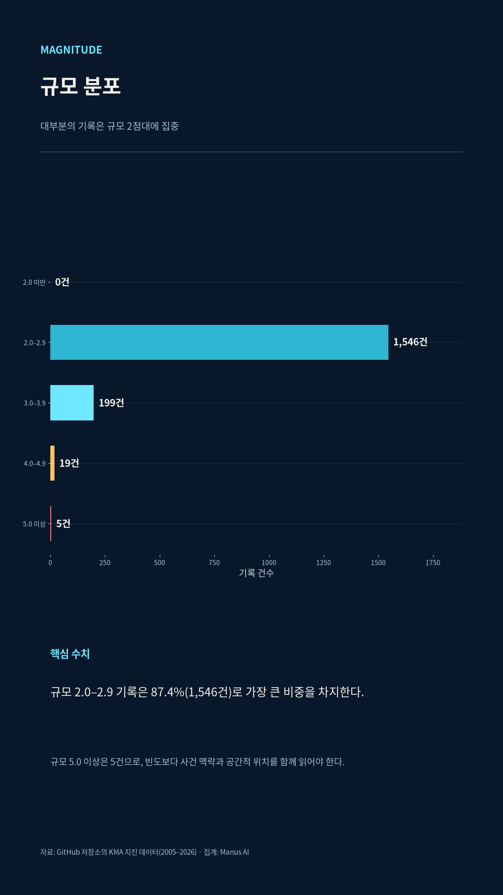
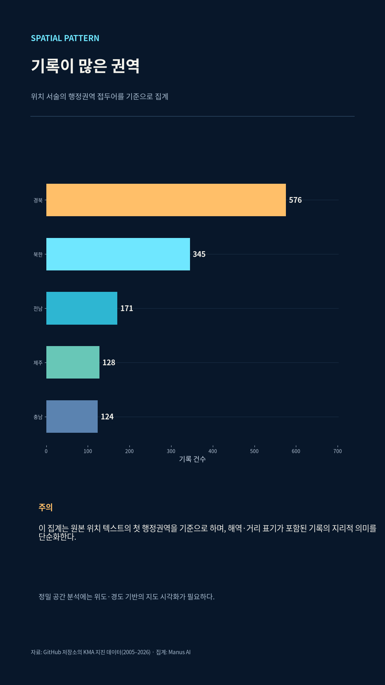
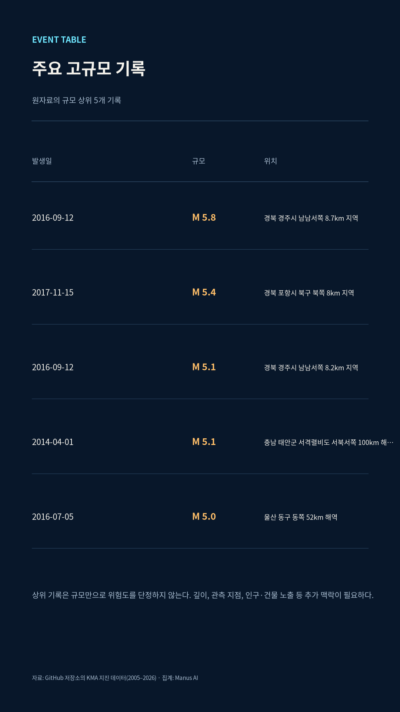
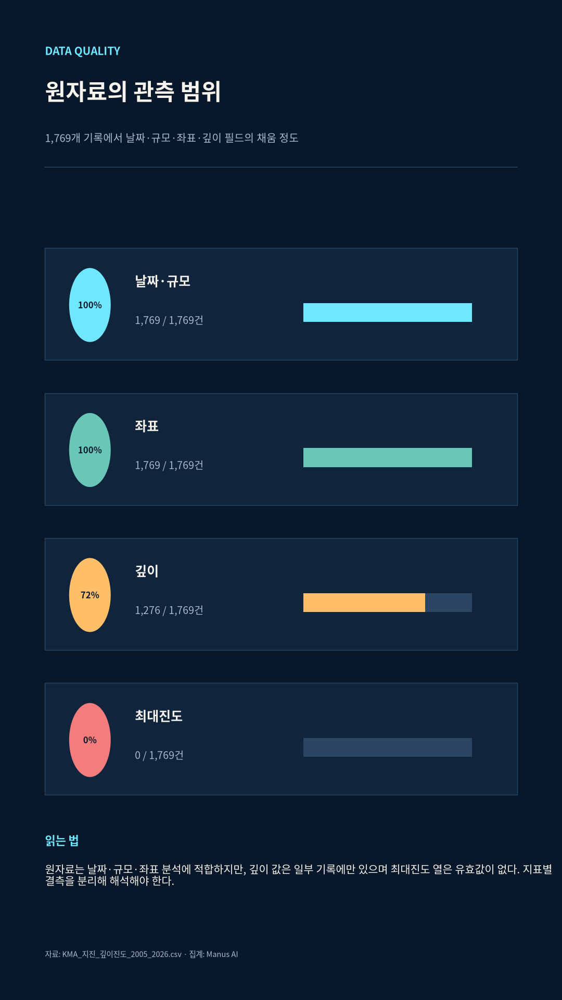
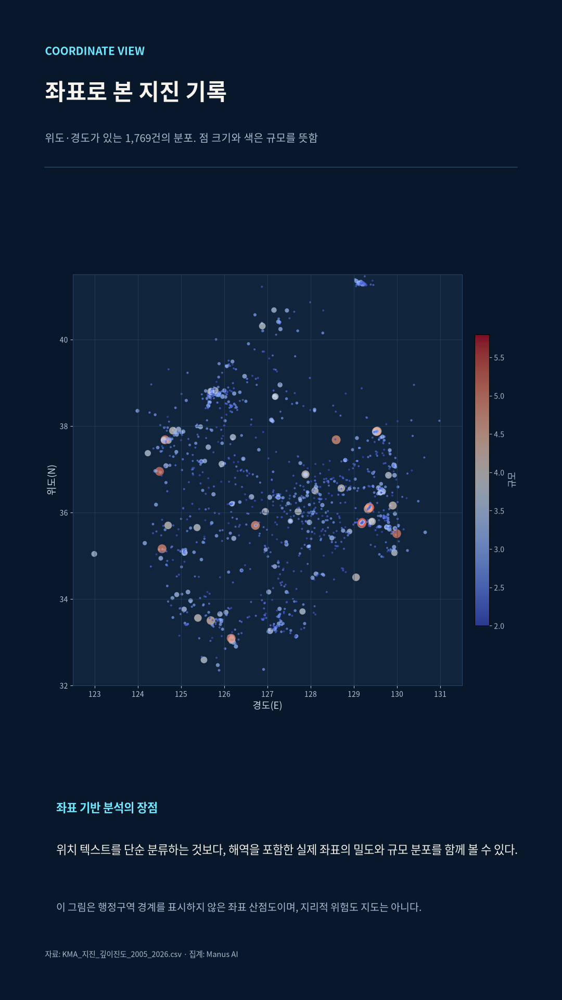

FREQUENCY
2016년
252건
분석 기간 가운데 가장 많은 기록이 쌓인 해입니다. 연간 건수만이 아니라 그해의 사건 맥락까지 함께 읽어야 합니다.

DATA JOURNALISM · KOREAN PENINSULA · 2005—2026

01 / INTERACTIVE MAP
규모·연도·표시 방식·육상과 해역을 직접 바꾸며, 한반도 지진 기록의 공간적 패턴을 탐색할 수 있습니다.
지도 원본의 내장 관측 레코드와 이 페이지의 KMA 집계는 수집·정제 시점이 달라 총계가 다를 수 있습니다. 화면 안의 범례와 필터 기준을 함께 확인해 주세요.
02 / WATCH
지도에서 관측점이 켜지고, 기록의 규모·빈도·공간 분포가 차례로 드러납니다.
03 / KEY FINDINGS
FREQUENCY
분석 기간 가운데 가장 많은 기록이 쌓인 해입니다. 연간 건수만이 아니라 그해의 사건 맥락까지 함께 읽어야 합니다.

MAGNITUDE
1,546건이 규모 2.0–2.9 구간에 속합니다. 빈도와 영향도를 같은 값으로 취급하지 않는 이유입니다.
LOCATION
원본 위치 텍스트의 첫 행정권역을 기준으로 단순 집계한 결과입니다. 해역·거리 표기는 별도 해석이 필요합니다.
DEPTH
깊이 값은 1,276건에만 있습니다. 필드별 결측은 분석의 한계이자 검증의 출발점입니다.
LATEST / AUTO-UPDATED
마지막 기록 기준 2026.06.16


기상청 지진정보 OPEN-API의 최신 기록을 반영합니다. 원천의 발표·수정 시점에 따라 이전 집계와 달라질 수 있으며, 분석 기준과 방법은 저장소에 함께 공개합니다.
LONGFORM / DATA JOURNALISM
작은 흔들림의 누적과 2016~2017년 기록의 집중, 육상·해역 분포, 그리고 결측 데이터까지. 숫자가 보여 주는 것과 말하지 않는 것을 상세 기사로 읽어봅니다.
상세 기사 읽기 →
04 / DATA GRAPHICS
정확한 수치 전달이 필요한 그래프는 원자료를 재현 가능한 방식으로 집계해 제작했습니다.






05 / METHOD & CAUTION
이 페이지의 집계는 저장소의 KMA_지진_깊이진도_2005_2026.csv를 기준으로 합니다. 발생일시·규모·위도·경도는 전 기록에 있으며, 깊이는 일부 기록에만 존재합니다. 최대진도 열에는 유효값이 없어 이번 분석 지표에서는 제외했습니다. 인터랙티브 지도는 기존 고도화 파일의 내장 관측 레코드를 사용하므로 수집·정제 시점에 따라 총계가 다를 수 있습니다.
시간발생일시를 연도 단위로 집계해 추이를 살폈습니다.
규모원자료의 규모 필드를 구간별로 나눠 분포를 계산했습니다.
공간위치 텍스트와 좌표를 구분해 각각의 장단점을 밝혔습니다.
결측필드별 유효값 여부를 숨기지 않고 함께 제시했습니다.